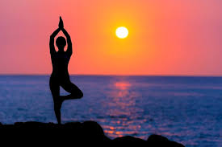
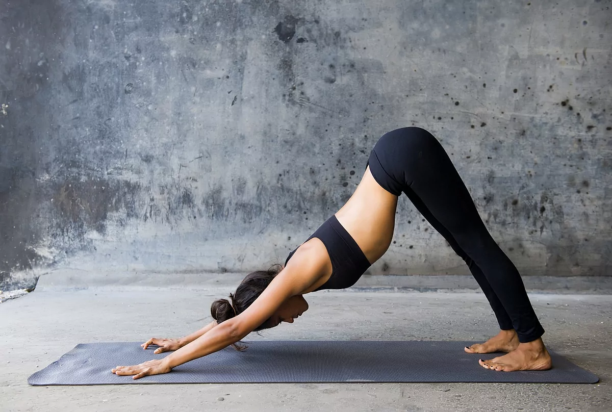
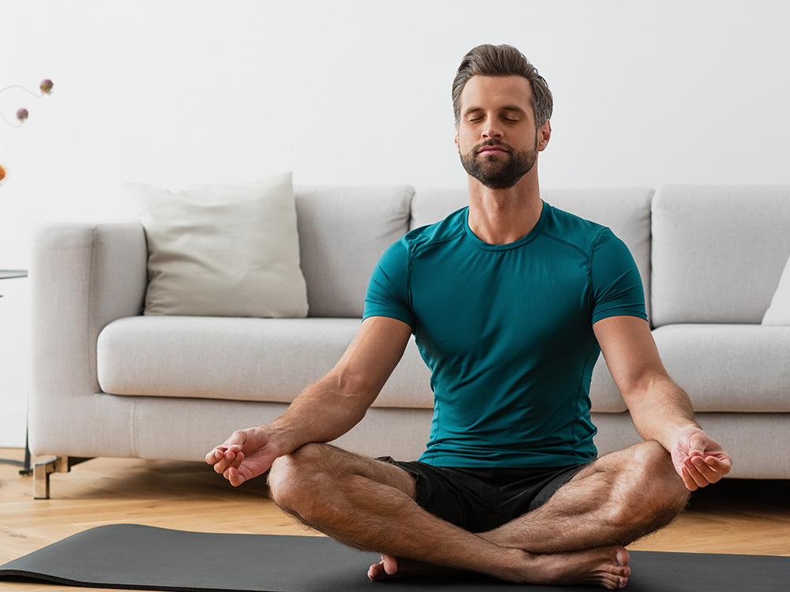

Yoga
La yoga es una disciplina que combina posturas físicas, técnicas de respiración y meditación para mejorar el bienestar físico y mental. Su origen se encuentra en la India y data de hace más de 5,000 años. Aunque puede parecer simplemente una serie de estiramientos, el yoga va mucho más allá y busca la unión entre el cuerpo, la mente y el espíritu.


Tipos de Yoga
- Hatha Yoga: Es el estilo más común y se enfoca en posturas sencillas que mejoran la flexibilidad y la fuerza.
- Vinyasa Yoga: Se caracteriza por el movimiento continuo, donde cada postura fluye hacia la siguiente, sincronizando la respiración con el movimiento.
- Ashtanga Yoga: Es un estilo más exigente y estructurado, donde se realizan secuencias de posturas en un orden específico para desarrollar fuerza y resistencia.

Beneficios del Yoga
La práctica regular de yoga tiene una variedad de beneficios comprobados:
- Flexibilidad y fuerza: Las posturas del yoga ayudan a fortalecer el cuerpo y a mejorar la flexibilidad.
- Reducción del estrés y la ansiedad: Las técnicas de respiración y la concentración en el momento presente ayudan a reducir los niveles de ansiedad y estrés.
- Bienestar emocional y mental: Mejora el estado de ánimo, reduce síntomas de depresión y promueve una actitud positiva hacia la vida.
Referencias Bibliográficas
- Iyengar, B. K. S. (1966). Light on Yoga: The Classic Guide to Yoga by the World's Foremost Authority. Schocken Books.
- Feuerstein, G. (2001). The Yoga Tradition: Its History, Literature, Philosophy and Practice. Hohm Press.